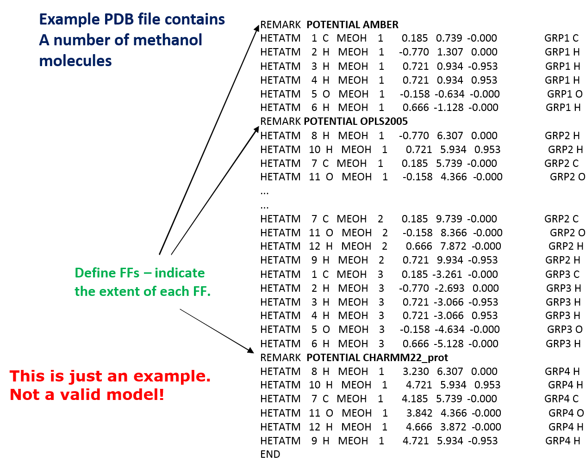
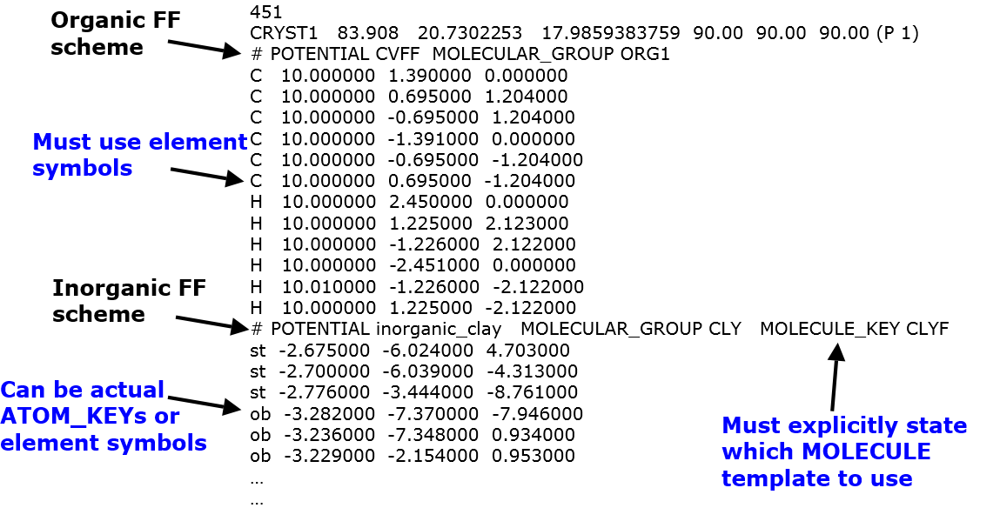
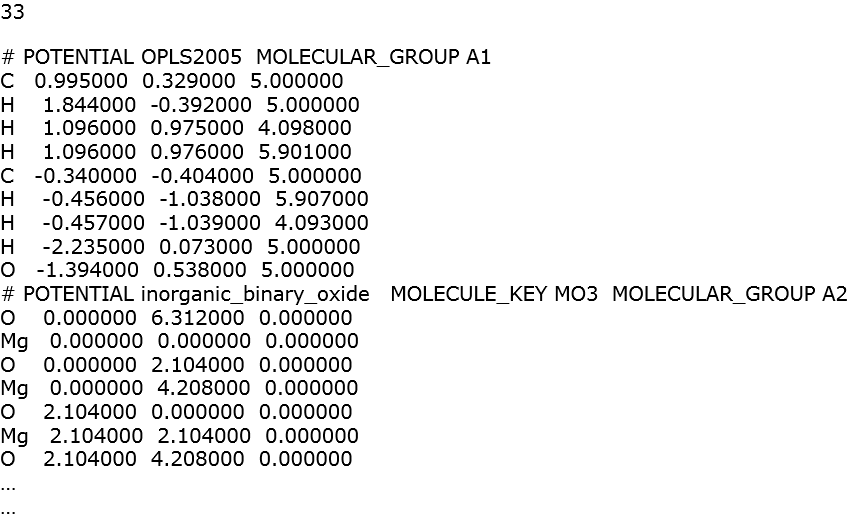

Multiple Potential Features¶
One of the unique aspect of DL_FIELD is that it enables users to use more than one potential schemes in the force field model. This is particularly useful if one were to setup a bio-inorganic system, or any organic-inorganic/organic mixed component systems.
Each FF scheme has its own protocol to setup the FF model. The trickiest part is how to account for the vdw interactions between atoms that are assigned with different FF schemes. Normally, a FF scheme such as CHARMM and AMBER follow a certain set of predefined rule to obtain vdw parameters for atoms of different types. However, this is not well defined for vdw parameters across different FF schemes.
In DL_FIELD this can be achieved by using one of the following approaches:
- Identify all possible vdw atom pairs but leave it blank for user to manually insert suitable parameters.
- Automatically determine the mixed vdw parameters based on a chosen mixing scheme.
- Use of Customise VDW interactions (VDW_FIX directive)
- Auto VDW determination
Warning
While DL_FIELD allows different ways to mix the vdw interactions, it is up to the user to check the validity of parameters otained in this manner.

Control options
To setup a multiple-potential system, you would need to define the potential schemes in the input configuration file. This is done by using the POTENTIAL directive in the input file. Also, you would need to specify the keyword ‘multiple’ in the DL_FIELD control file:
Control file title.
1 * Construct DL_POLY output files
0 * Unuse slot.
multiple * Type of force field require (see list below for choices).
kcal/mol * Energy unit: kcal/mol, kJ/mol, eV, or K.
normal * Conversion criteria (strict, normal, loose)
1 * Bond type (0=default, 1=harmonic , 2=Morse)
1 * Angle type (0=default, 1=harmonic, 2=harmonic cos)
...
...
...
Otherwise, DL_FIELD will ignore the POTENTIAL directive in the input file.
After that, you would need to decide what type of vdw mixing rules you would want to apply to your model between two different FF schemes. The appropriate control options are shown below:
...
...
2 * Atom display: 1 = DL_FIELD format. 2 = Standard format
2 * Vdw display format: 1 = 12-6 format 2 = LJ format
default * Epsilon mixing rule (organic FF only) : 1 = geometric 2 = arithmatic or default
default * Sigma mixing rule (organic FF only) : 1 = geometric 2 = arithmatic or default
1 * Epsilon mixing rule (inorganic FF only) : 1 = geometric 2 = arithmatic
2 * Sigma mixing rule (inorganic FF only) : 1 = geometric 2 = arithmatic
3 * Epsilon mixing rule (BETWEEN different FF) : 1 = geometric 2 = arithmatic
3 * Sigma mixing rule (BETWEEN different FF): 1 = geometric 2 = arithmatic
0 * Display additional info. for protein 1=Yes 0=No
...
...
In this example, option 3 mixing rules (Fender-Halsey) were selected for epsilon and sigma parameters for the Lennard-Jone vdw interactions. For other types of mixing rules, please consult Section 3.10.1 of the DL_FIELD manual.
PDB file with multiple potential
Diagram below shows a PDB file (multiple_potential_1.pdb from the Examples/ folder) consists of purely methanol molecules. It has the MOLECULE_KEY MEOH and the molecules were grouped into four Molecular Groups: one molecule belongs to GRP1, two molecules belong to GRP2, one molecule belongs to GRP3 and one molecule belongs to GRP4.
{kind=link}
The locations of POTENTIAL directives indicate the extent of the FF schemes applications: AMBER FF will be applied to the first methanol molecule; OPLS to the following three molecules and CHARMM22 to the last molecule.
When DL_FIELD is run, the following information will be reported in dl_field.output file:
...
...
You choose multiple force field models.
The following FF schemes detected:
(1) - amber (ATOM_KEYs will be appended with a suffix _A)
(2) - opls2005 (ATOM_KEYs will be appended with a suffix _B)
(3) - charmm22_prot (ATOM_KEYs will be appended with a suffix _C)
----- (1) POTENTIAL amber -----
Allocate memory for MOLECULE templates.
Allocate memory for MOLECULE table.
...
...
The suffixes _A, _B and _C are the unique labels assigned to distinguish from one atom to the other, according to the FF schemes to which they belong. After that, the vdw Lennard-Jones parameters from different FF schemes were obtained based on the mixing rules specified by the users. Example below shows part of the vdw parameters from the dl_poly.FIELD file:
...
...
CT_A CT_B lj 8.233067e-02 3.449835
CT_A HC_B lj 4.708752e-02 2.949835
CT_A OAL_B lj 1.331281e-01 3.259835
CT_A HO_B lj 4.708752e-02 1.949835
H1_A CT_B lj 2.536597e-02 2.985677
H1_A HC_B lj 2.061269e-02 2.485677
...
...
HO_A HA_C lj 0.000000e+00 1.175986
HO_A OH1_C lj 0.000000e+00 1.576891
HO_A H_C lj 0.000000e+00 0.200007
CT_B CT3_C lj 7.232877e-02 3.585251
CT_B HA_C lj 3.300000e-02 2.925986
CT_B OH1_C lj 9.205502e-02 3.326891
CT_B H_C lj 5.421429e-02 1.950007
...
...
xyz file with multiple potential
Example below shows part of xyz input file contained an organic and an inorganic components, which were assigned to CVFF scheme and inorganic FF for clay, respectively. The descriptions illustrate how to use the multiple potential feature and is largely self-explanatory.
{kind=link}
Sometimes, the vdw parameters between two different FF schemes cannot be determined. This is especially true for the most of inorganic FF. For example, below shows the xyz file consists of a ethanol molecule with magnesium oxide.
{kind=link}
DL_FIELD will report the missing vdw parameters between the metal oxide and the organic molecule. The corresponding FIELD file is shown below:
...
...
H_A H_A lj 4.600000e-02 0.400014
Mg3_B Mg3_B buck 0.000000 0.000000 0.000000
O10_B Mg3_B buck 26566.272000 0.306500 0.000000
O10_B O10_B buck 524868.360000 0.149000 667.846560
CT3_A Mg3_B ???? xxx xxx
CT3_A O10_B ???? xxx xxx
HA_A Mg3_B ???? xxx xxx
HA_A O10_B ???? xxx xxx
...
...
In this case, you would need to insert manually the values for these parameters. Alternatively, you can use VDW_FIX directive to do this for you (consult the manual for details).